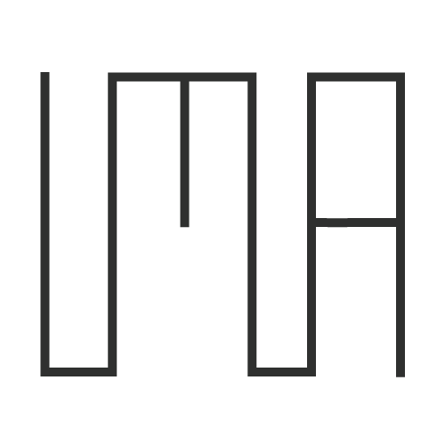
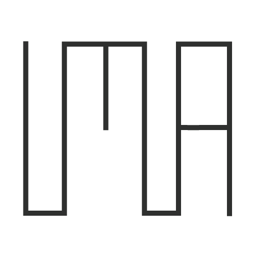

Projects
VentureOut 2020
VentureOut is an NYC startup accelerator that bridges the gap between global talent and entrepreneurship opportunities in the U.S. As a video post-production intern at VO, I researched, pitched, produced, and executed everything in between to create ~55 new pieces of virtual interview content, advising entrepreneurs and marketing VentureOut as a thought-leader in the startup space. Below, Bonnie Morlak, Entrepreneur-in-Residence, opens up about his past burnout and depression to remind entrepreneurs that mental health is real, serious, and imperative.
DCTV 2019
DCTV is a non-profit organization that teaches young adults the videography skills they need to tell important stories affecting their communities. I contributed to the shooting and editing of DCTV's Youth Media Department's behind the scenes video for their summer intensive program.
Designing an IMA Logo 2020
Case Overview: Interactive Media Arts (IMA) is a new New York University (NYU) undergraduate program that teaches students to use art, technology, media, and design to create interactive, creative experiences. Because it's a new program, IMA lacks a visual identity that encompasses its unique interdisciplinary approach and speaks to its learners' extraordinary potential. My task as a designer was to create a logo that represents IMA's brand.
Problem Statement: Design a logo that best represents IMA's incorporation of interaction, media, and arts, students' creativity and collaboration, and the community's ability to create extraordinary new opportunities.
Brand Audit: First, a brand audit was done with students in the Design Fundamentals class and from my personal experience with IMA. After generating a word web, salient associations were pulled out and focused on. My primary design goals were to communicate IMA as a place of potential, expression, design, and digital experiences.
Ideation: Sketching was used as a tool to explore as many concepts as possible. I gravitated towards designs that incorporated references to the digital world (cursors, switches, buttons), but which also communicated the potential to create something new, something great.

First drafts: 4 concepts were chosen for critique and further conceptualization. (From top left), 1 was chosen for its reference to digital switches, which makes users want to interact/slide the button and speaks to the opportunities users open up when attending the program. The logo works at different scales and can even be programmed to create dynamic experiences on the web. 2 was a homage to the subway system that connects NYC together, and the collaboration between students at IMA. 3 plays on the idea of a blinking text cursor as the gateway to expression. 3 also has potential to be pushed further, using the acronym IMA as a pun, dynamically changing the logo to: I'm an artist, I'm a hacker, I'm a designer etc. 4 maintains legibility yet abstracts the type IMA into an electric circuit board. Everything is connected, which is a double representation of IMA's community and also that connectivity is integral to working digital experiences. 4 can use color gradients to emphasize the moving of electrons and the generation of sparks and new ideas.

 

Color pass: A variety of colors were tested with first draft concept 1. Primary colored gradients were tested to symbolize IMA's playfulness and relevance to modern times (Instagram popularized the gradient trend). NYU purple was chosen as a dominant color to stay on brand. Contrasting colors were tested but discarded due to the resemblance to the Golden State Warriors. User testing was done, with students from Design Fundamentals commenting on their favorite button and why.
Final result: The purple, white, purple NYU color palette was chosen because it most clearly communicated that it was a digital switch and because it remains on brand for NYU.

More
Connect with me on LinkedIn to hear more about my other video, design, art, and photography projects.